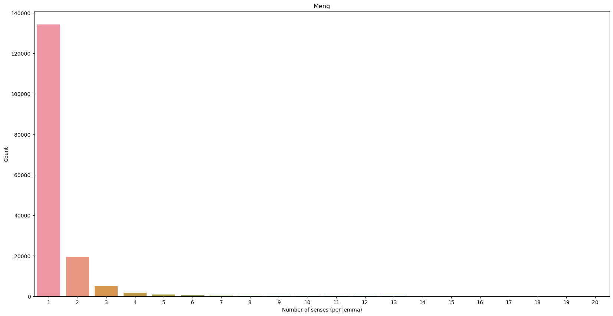

Language Resources with/in Language Models
a case of cwn
Shu-Kai Hsieh
Graduate Institute of Linguistics, National Taiwan University
2023/05/12, CBS Research Symposium, PolyU. Hong Kong


WordNet architecture
Two core components:
- Synset (synonymous set)
- Paradigmatic lexical (semantic) relations: hyponymy/hypernymy; meronymy/holonymy, etc

Chinese Wordnet
Follow PWN (in comparison with Sinica BOW)
Word segmentation principle (Huang, Hsieh, and Chen 2017)
Corpus-based decision
Manually created (sense distinction, gloss with controlled vocabulary, etc)
The status quo: latest release 2022, website online

Gloss as lexicographic resources with add-ons annotations
-
Gloss (`lexicographic definition’) is carefully controlled with limited vocabulary and patterns, e.g.,
- Verbs with
VHtag (i.e., stative intransitive verbs) are glossed with “形容 or 比喻形容 …”. - Adverbs are glossed with “表…”
- Verbs with
collocational information, pragmatic information (‘tone’, etc) are recorded as additional annotation.

Comparison to others


Data summary 1/1

Data summary 2/2
Figure 2 further demonstrates the distribution of different types of relations

CWN 2.0
Visualization

CWN 2.0
sense tagger and SemCor
-
SemCorsemi-automatically curated sense-tagged corpus

CWN-based applications
sense frequency distribution in corpus
-
Now we have chance to empirically explore the dominancy of word senses, which is essential for both lexical semantic and psycholinguistic studies.
- e.g., ‘開’ (kai1,‘open’) has (surprisingly) more dominant blossom sense over others (based on randomly chosen 300 sentences in ASBC corpus)

Prompt and Prompt engineering
Persona setting is also important, socio-linguistically

Prompting LLM for solve lexical semantic tasks
word sense induction 
Limitations
- Hallucination
when the generated content is nonsensical or unfaithful to the provided source content.

A neuro-symbolic approach to rebuild the LR ecosystem
Toward a more linguistic knowledge-aware LLMs
Mutually benificial
Grounded generation (Indexing LRs)
LLM-LR app stores: LR and LLM
langchainedUsing cwn and corpus as an case study

CWN 2.0 and Corpus plugins for LLMs
high-level architecture

lopeGPT
祝黃老師 福如東海壽比南山
(找以前的相片) 慶生蛋糕